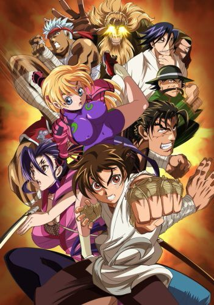
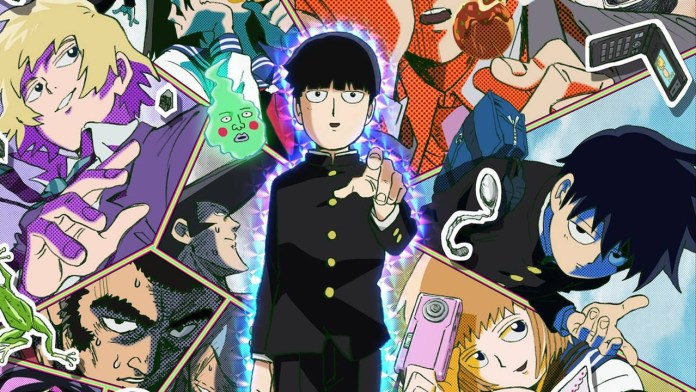
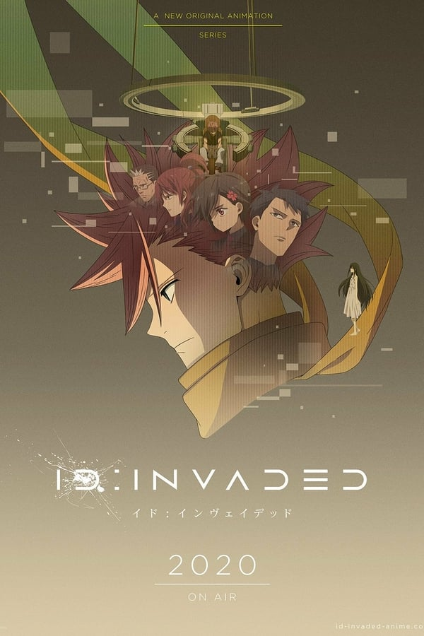

O objetivo dessa página é listar animes bons que não são muito conhecidos.
Shijou Saikyou no Deshi Kenichi
Kenichi Shirahama é um garoto de 15 anos conhecido por ser o fracote da escola. Está sempre lendo livros de auto ajuda e freqüentemente é sacaneado pelos outros alunos. Sua vida muda quando conhece Miu Furinji, uma aluna nova que sabe lutar muito bem. Ao saber da frustrada tentativa de Kenichi de entrar no clube de Karatê da escola, Miu indica a ele o Dojo onde treina. Kenichi se surpreende quando vai conhecer tal Dojo. Lá ele encontra as mais bizarras e assustadoras figuras que já viu. Se isso não bastasse, descobre que Miu mora naquele Dojo e é neta do principal mestre.O anime contém ação, comédia e um pouco de romance. A comédia fica por conta das cenas no Dojo,com os mestres e toda a bagunça doméstica além do bizarro treino de Kenichi. O romance é evidente.
Mob Psycho 100
Kageyama Shigeo, o “Mob”, é um garoto que não leva muito jeito pra se expressar, mas que é um poderoso telepata. Decidido a levar uma vida normal, Mob suprime seus poderes extrassensoriais, mas quando suas emoções atingem um pico de 100%, algo terrível lhe acontece! Rodeado de falsos telepatas, espíritos do mal e misteriosas organizações, como Mob reagirá? Que decisões ele vai tomar?
ID: Invaded
A história acompanha Sakaido, um detetive que se vê em um estranho mundo virtual tendo de resolver um mistério envolvendo o assassinato de uma garota chamada “Kaeru-chan”.